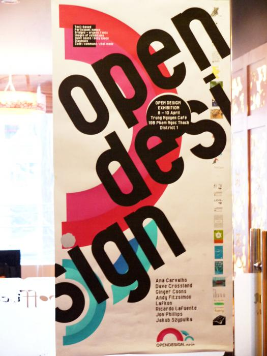
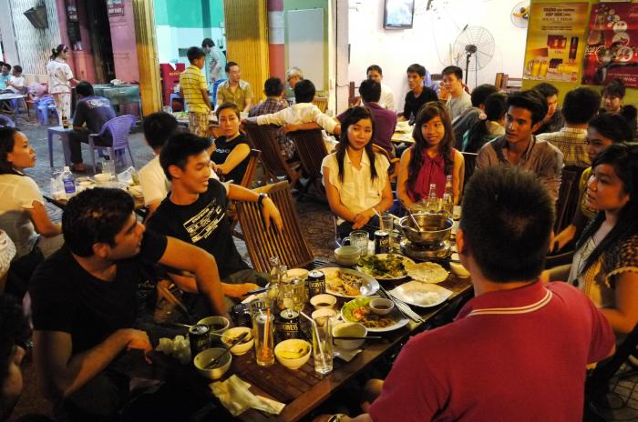

FOSSASIA OPEN DESIGN WEEKS ASIA

The FOSSASIA Open Design Weeks Asia took place in Hochi Minh City and Cantho (Vietnam) in 2011 and 2012.
The Open Design Weeks are all about sharing of graphic designs, Libre Graphics, Open Source Software, open content and Free Culture Practices, FasionTec and the maker community.

Events during the design weeks include workshops, design camps to share expertise in an unconference, company meet ups to establish international cooperations, presentations in Universities and training workshops.

Presentation of Fontforge at Open Design Weeks Asia in Ho Chi Minh City.

The intensive workshops with International designers and typographers focus on collaborative font design, mapping and publication.
The workshops were held at at the University of Arts and Design in Ho Chi Minh City and the CanTho Mekong Hotel Xoai.
Please join us on Facebook and follow us on twitter.

Dinner and Social Meetup during FOSSASIA Open Design Weeks in Saigon (Ho Chi Minh City)

About

Open Design as stated on Wikipedia is the development of physical products, machines and systems through use of publicly shared design information. The process is generally facilitated by the Internet and often performed without monetary compensation. The goals and philosophy are identical to open source, but reside in a different paradigm.
OpenDesign.Asia is a site dedicated at promoting sharing among designers and cooperation across the continent and around the world. The initiative was started by a group of Vietnamese contributors during FOSSASIA 2010 in Ho Chi Minh City. More info at http://fossasia.org
Contact
Hong Phuc Dang
Open Design Week Organizer
OPEN DESIGN WEEK OFFICE
MBM Workspace, 93 Mau Than, Xuan Khanh Ward., Ninh Kieu Dist, Can Tho City
Sources of The Open Design Movement
The principles of open design are derived from the Free Software and open source movements. In 1997 Eric S. Raymond, Tim O’Reilly and Larry Augustin established “Open Source” as an alternative expression to “Free Software,” and in 1997 [Bruce Perens](http://en.wikipedia.org/wiki/…(line truncated)…
The idea of open design was taken up, either simultaneously or subsequently, by several other groups and individuals. The principles of open design are closely similar to those of Open source hardware design, which emerged in March 1998 when Reinoud Lamberts of the University of Delft proposed on his âOpen Design Circuitsâ website the creation of a hardware design community in the spirit of free software.
Current Directories of The Open Design Movement
The open design movement currently unites two trends. On the one hand, people apply their skills and time to projects for the common good, perhaps where funding or commercial interest is lacking, for developing countries or to help to spread ecological or cheaper technologies. On the other hand, open design may provide a framework for developing very advanced projects and technologies that might be beyond the reso…(line truncated)…
Open Machine Design As Compared To Open-Source Software
The “open design” movement is currently fairly nascent but holds great potential for the future. In some respects design and engineering are even more suited to open collaborative development than the increasingly common open-source software projects, because with 3D models and photographs the concept can often be understood visually. It is not even necessary that the project members speak the same languages to usefully collaborate.
However there are certain barriers to overcome for open design when compared to software development where there are mature and widely used tools available and the duplication and distribution of code cost next to nothing. Creating, testing and modifying physical designs is not quite so straightforward because of the effort, time and cost required to create the physical artefact; although with access to emerging flexible computer-controlled manufacturing techniques the complexity and effort of construction …(line truncated)…